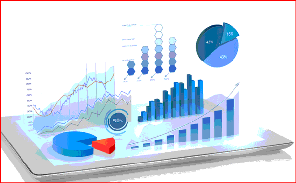
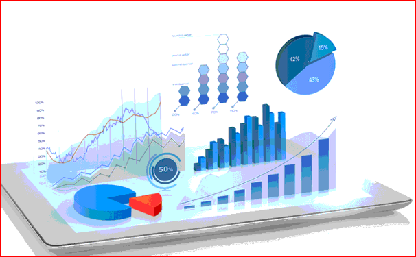
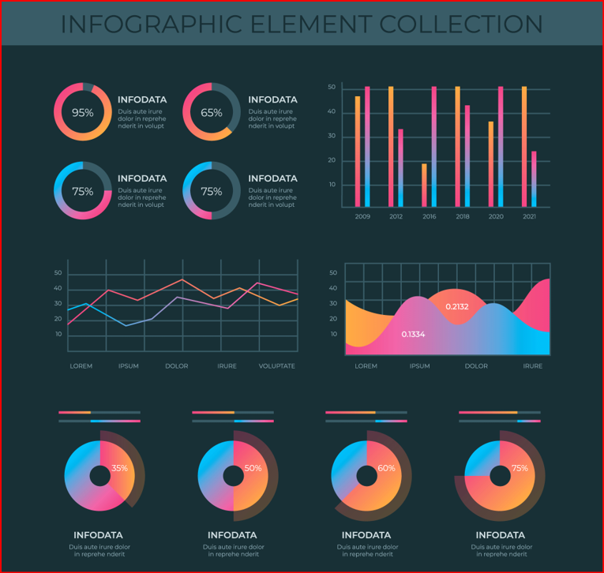
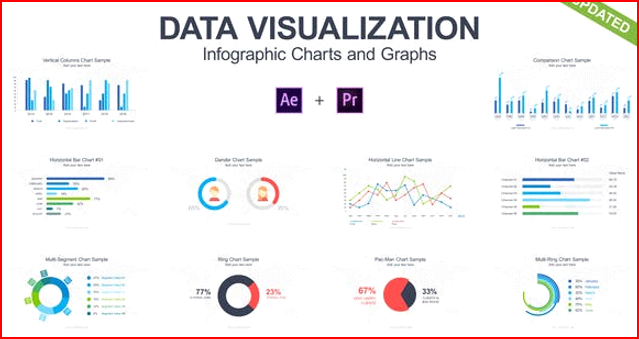

—Data Visualization—
What is Data Visualization ?
Data visualization is the practice of translating information into a visual context, such as a map or graph, to make data easier for the human brain to understand and pull insights from. The main goal of data visualization is to make it easier to identify patterns, trends and outliers in large data sets. The term is often used interchangeably with others, including information graphics, information visualization and statistical graphics.
Data visualization is the process of translating large data sets and metrics into charts, graphs and other visuals. The resulting visual representation of data makes it easier to identify and share real-time trends, outliers, and new insights about the information represented in the data.
Examples-->
- Cinema: Explaining a movie plot through data visualization
Inception is an American film, directed by Christopher Nolan and released in 2010, that focuses on the themes of dreams and reality. The movie’s hero, Cobb, is an “extractor”, an agent that can enter someone’s dreams and learn their secrets, who collaborates with others on industrial espionage missions.
- Art: Analyzing the color palettes of great artworks
Arthur Buxton has created a data visualization that shows an overview of the color palettes used by ten painters, including Monet, Gauguin, and Cézanne, over a period of ten years. These offer a new perspective on these artists, sorting them by the colors used rather than by art movement.
- Philosophy: A visual depiction of ideas
The data presented here is a direct reflection of concepts from everyday life. Ideas are presented and analyzed based on their significance, duration and the feelings that they evoke. Another interesting perspective on a common subject!
 

Why we need Data Visualization?
Data visualization gives us a clear idea of what the information means by giving it visual context through maps or graphs. This makes the data more natural for the human mind to comprehend and therefore makes it easier to identify trends, patterns, and outliers within large data sets.
In advanced analytics, data scientists are creating machine learning algorithms to better compile essential data into visualizations that are easier to understand and interpret.
Specifically, data visualization uses visual data to communicate information in a manner that is universal, fast, and effective. This practice can help companies identify which areas need to be improved, which factors affect customer satisfaction and dissatisfaction, and what to do with specific products (where should they go and who should they be sold to). Visualized data gives stakeholders, business owners, and decision-makers a better prediction of sales volumes and future growth.
Benefits of Data Visualization?
Data visualization positively affects an organization’s decision-making process with interactive visual representations of data. Businesses can now recognize patterns more quickly because they can interpret data in graphical or pictorial forms.
Here are some more specific ways that data visualization can benefit an organization:
Correlations in Relationships:
Without data visualization, it is challenging to identify the correlations between the relationship of independent variables. By making sense of those independent variables, we can make better business decisions.
Trends Over Time:
While this seems like an obvious use of data visualization, it is also one of the most valuable applications. It’s impossible to make predictions without having the necessary information from the past and present. Trends over time tell us where we were and where we can potentially go.
Frequency:
Closely related to trends over time is frequency. By examining the rate, or how often, customers purchase and when they buy gives us a better feel for how potential new customers might act and react to different marketing and customer acquisition strategies.
Examining the Market:
Data visualization takes the information from different markets to give you insights into which audiences to focus your attention on and which ones to stay away from. We get a clearer picture of the opportunities within those markets by displaying this data on various charts and graphs.
Risk and Reward:
Looking at value and risk metrics requires expertise because, without data visualization, we must interpret complicated spreadsheets and numbers. Once information is visualized, we can then pinpoint areas that may or may not require action.
Reacting to the Market:
The ability to obtain information quickly and easily with data displayed clearly on a functional dashboard allows businesses to act and respond to findings swiftly and helps to avoid making mistakes.
Tools used in data visualization:
Tableau
Tableau is a data visualization tool that can be used by data analysts, scientists, statisticians, etc. to visualize the data and get a clear opinion based on the data analysis. Tableau is very famous as it can take in data and produce the required data visualization output in a very short time. And it can do this while providing the highest level of security with a guarantee to handle security issues as soon as they arise or are found by users.
Tableau also allows its users to prepare, clean and format their data and then create data visualizations to obtain actionable insights that can be shared with other users. Tableau is available for the individual data analyst or at scale for business teams and organizations. It provides a 14-day free trial followed by the paid version.Looker
Looker is a Looker data visualization tool that can go in-depth in the data and analyze it to obtain useful insights. It provides real-time dashboards of the data for more in-depth analysis so that businesses can make instant decisions based on the data visualizations obtained. Looker also provides connections with Redshift, Snowflake, BigQuery, as well as more than 50 SQL supported dialects so you can connect to multiple databases without any issues.
Looker data visualizations can be shared with anyone using any particular tool. Also, you can export these files in any format immediately. It also provides customer support wherein you can ask any question and it shall be answered. A price quote can be obtained by submitting a form.Zoho Analytics
Zoho Analytics is a Business Intelligence and Data Analytics software that can help you create wonderful looking data visualizations based on your data in a few minutes. You can obtain data from multiple sources and mesh it together to create multidimensional data visualizations that allow you to view your business data across departments. In case you have any questions, you can use Zia which is a smart assistant created using artificial intelligence, machine learning, and natural language processing.
Zoho Analytics allows you to share or publish your reports with your colleagues and add comments or engage in conversations as required. You can export Zoho Analytics files in any format such as Spreadsheet, MS Word, Excel, PPT, PDF, etc. The pricing options available for this software include a basic plan with A$34.1/month billed yearly.Sisense
Sisense is a business intelligence-based data visualization system and it provides various tools that allow data analysts to simplify complex data and obtain insights for their organization and outsiders. Sisense believes that eventually, every company will be a data-driven company and every product will be related to data in some way. Therefore it tries its best to provide various data analytics tools to business teams and data analytics so that they can help make their companies the data-driven companies of the future.
It is very easy to set up and learn Sisense. It can be easily installed within a minute and data analysts can get their work done and obtain results instantly. Sisense also allows its users to export their files in multiple formats such as PPT, Excel, MS Word, PDF, etc. Sisense also provides full-time customer support services whenever users face any issues. A price quote can be obtained by submitting a form.IBM Cognos Analytics
IBM Cognos Analytics is an Artificial Intelligence-based business intelligence platform that supports data analytics among other things. You can visualize as well as analyze your data and share actionable insights with anyone in your organization. Even if you have limited or no knowledge about data analytics, you can use IBM Cognos Analytics easily as it interprets the data for you and presents you with actionable insights in plain language.
You can also share your data with multiple users if you want on the cloud and share visuals over email or Slack. You can also import data from various sources like spreadsheets, cloud, CSV files, or on-premises databases and combine related data sources into a single data module. IBM Cognos Analytics provides a free trial for 30 days followed by a plan Starting at A$20.87 per month.Qlik Sense
Qlik Sense is a data visualization platform that helps companies to become data-driven enterprises by providing an associative data analytics engine, sophisticated Artificial Intelligence system, and scalable multi-cloud architecture that allows you to deploy any combination of SaaS, on-premises or a private cloud.
You can easily combine, load, visualize, and explore your data on Qlik Sense, no matter its size. All the data charts, tables, and other visualizations are interactive and instantly update themselves according to the current data context. The Qlik Sense AI can even provide you with data insights and help you create analytics using just drag and drop. You can try Qlik Sense Business for free for 30 days and then move on to a paid version.Domo
Domo is a business intelligence model that contains multiple data visualization tools that provide a consolidated platform where you can perform data analysis and then create interactive data visualizations that allow other people to easily understand your data conclusions. You can combine cards, text, and images in the Domo dashboard so that you can guide other people through the data while telling a data story as they go.
In case of any doubts, you can use their pre-built dashboards to obtain quick insights from the data. Domo has a free trial option so you can use it to get a sense of this platform before committing to it fully. In case of any customer service inquiries, Domo is always available from 7 AM to 6 PM from Monday to Friday and you can try it for free followed by the paid version.Microsoft Power BI
Microsoft Power BI is a Data Visualization platform focused on creating a data-driven business intelligence culture in all companies today. To fulfill this, it offers self-service analytics tools that can be used to analyze, aggregate, and share the data in a meaningful fashion.
Microsoft Power BI offers hundreds of data visualizations to its customers along with built-in Artificial Intelligence capabilities and Excel integration facilities. And all this is very pocket friendly at $9.99 monthly price per user for the Microsoft Power BI Pro. It also provides you with multiple support systems such as FAQs, forums and also live chat support with the staff.Klipfolio
Klipfolio is a Canadian business intelligence company that provides one of the best data visualization tools. You can access your data from hundreds of different data sources like spreadsheets, databases, files, and web services applications by using connectors. Klipfolio also allows you to create custom drag-and-drop data visualizations wherein you can choose from different options like charts, graphs, scatter plots, etc.
Klipfolio also has tools you can use to execute complex formulas that can solve challenging data problems. You can obtain a free trial of 14 days followed by$49 per month for the basic business plan. In the case of customer inquiries, you can get help from the community forum or the knowledge forum.SAP Analytics Cloud
SAP Analytics Cloud uses business intelligence and data analytics capabilities to help you evaluate your data and create visualizations in order to predict business outcomes. It also provides you with the latest modeling tools that help you by alerting you of possible errors in the data and categorizing different data measures and dimensions. SAP Analytics Cloud also suggests Smart Transformations to the data that lead to enhanced visualizations.
In case you have any doubts or business questions related to data visualization, SAP Analytics Cloud provides you with complete customer satisfaction by handling your queries using conversational artificial intelligence and natural language technology. You can try this platform for free for 30 days and after that pay $22 per month for the Business Intelligence package.
Real Time Application Data Visualization:
Real-time data visualization takes visuals to the next level by letting you update charts and graphs in real-time. Having real-time data available helps stakeholders to make better decisions that are based on actual data rather than on intuition.
Data visualisation tools make it easy to view and comprehend trends, outliers, and patterns in data by utilising visual components like charts, graphs, and maps.
How do we build real-time visualizations?
At its core, a real-time visualization is made up of two components: a stream of data and a user interface.
Stream of Data
A stream of data is a constant flow of data where data packets is sent whenever that data is updated. This could be weather forecasts, stock prices, revenue, or Tweets, pretty much any data group that changes over time. Because a stream of data is active, it needs to have persistence, an open connection that allows data to be transferred freely.
User Interface
A real-time visualization requires a flexible, interactive user interface where changes are easily displayed based on changes sent from the stream of data.  
“By visualizing information, we turn it into a landscape that you can explore with your eyes.
A sort of information map. And when you’re lost in information, an information map is kind of useful.”
– David McCandless